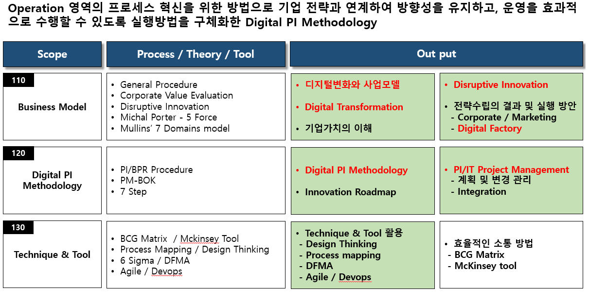
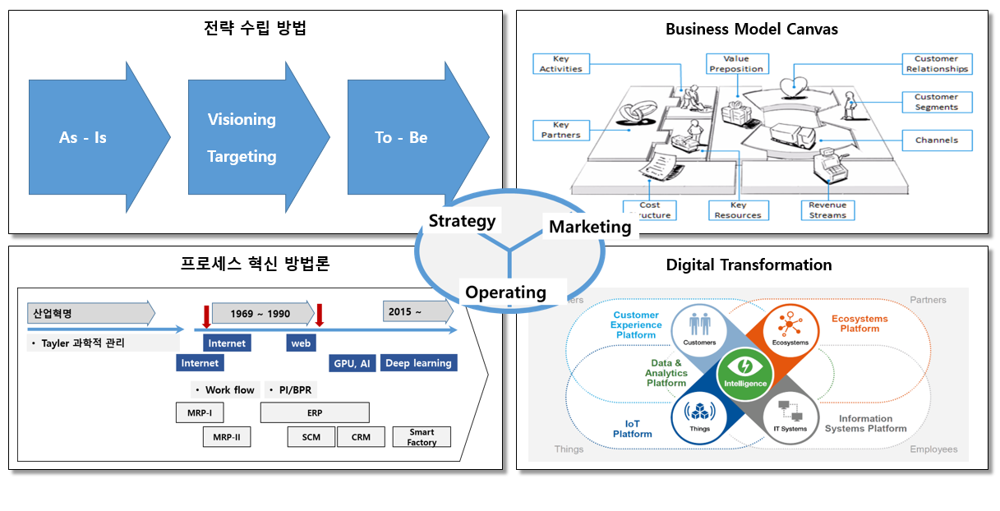
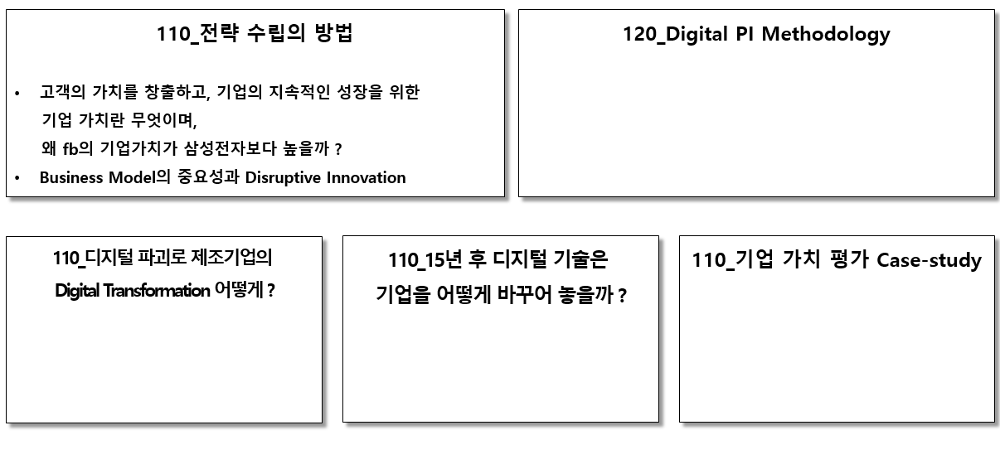

Knowledge scope - Strategy

Business Model canvas에 의거 고객에게 전달하는 가치와 그에 따른 비용과 수익을 통하여 기업의 미래가치를 평가할 수
있어야 한다.
전략은 기업이 어떤 방식으로 사업을 할 것인지를 결정하는 방향이며, 5~10년 후의 기업의 미래를 결정하기 위한
Disruptive Innovation 고려하여야 한다.
주요 output - Business Model & 디지털 프로세스 혁신 방법론
전략의 중요성과 미래 기업가치 평가, 현재 사업모델의 강점과 약점 분석, Disrutive Innovation을 전략의 수립 과정에 활용한다.
디지털 기술을 활용한 프로세스 혁신으로 운영의 효율화 자체가 경쟁력이 될 수 있다.

source: https://ocw.tudelft.nl/course-lectures/5-1-1-business-model-canvas/ https://www.mendix.com/blog/takeaways-gartner-symposium-5-focus-areas-digital-business-strategy/
주요 Contents
